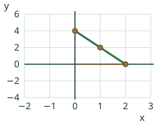
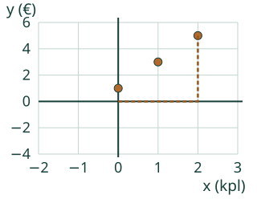
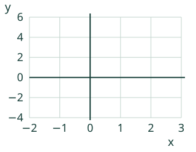

Loikka muuttaa ohjetaulukon pisteiksi.
Teen funktion arvopareista kuvaajan.
Pohdi ensin: Miten näet pisteestä, kumpi luku on x?
Kaksi esimerkkiä ja uusi tilanne
Arvopari muuttuu pisteeksi
Sääntö y = 2x − 1: kun x = −1, y = −3; kun x = 0, y = −1; kun x = 1, y = 1. Pisteessä (−1, −3) liikut ensin vasemmalle ja sitten alas. Koordinaattien vaihtaminen tuottaa eri pisteen.
Alkumallissa sääntö koskee kaikkia reaalilukuja välillä −1 ≤ x ≤ 2. Siksi lopuksi voidaan piirtää suora myös taulukon pisteiden väliin. Arvotaulukko tukee tätä esitystä; sen hallinta ei ole uusi pakollinen portti.

Virheajatus: eri x-arvoilla täytyy olla eri y. Ei tarvitse: y = 2 on funktio myös silloin, kun kaikki sen pisteet ovat samalla vaakasuoralla.

Kokeile itse
Voit vastata suoraan. Malli ja apu ovat valinnaisia; ei pakollista puhetta tai kuuntelua.
y = 2x − 1. Merkitse kolme pistettä: x = −1, 0 ja 1. Täytä kunkin pisteen x ja y. Rivien järjestys on vapaa.
Piirron tarkistusraja
Nykyiset täydelliset kokonaislukupisteesi näkyvät ruudukossa. Tyhjä tai tukematon pari jätetään piirtämättä. Tarkistus hyväksyy vain pyydetyn koko pistejoukon.

Tarvitsen apua
Valitse pyydetty x, laske y annetulla säännöllä ja kirjoita pari (x, y). Vaakasuunnassa yksi ruutu on 1, pystysuunnassa yksi ruutu on 2. Rivien järjestys ei muuta pistejoukkoa.
Avun kanssa tehty vastaus on tuettua harjoittelua. Voit avata esimerkin ja jatkaa samaa tavoitetta.
Lisätutkimus ja opettajalle
Muodostaa annetusta säännöstä arvopareja ja esittää ne koordinaatistossa; ilmoittaa akselit, asteikon ja sallitut syötteet. Selittää, milloin pisteiden välinen suora kuuluu annettuun malliin.
Luokat 7–9. Kanoninen rooli process. Pakolliset esitiedot säilyvät graafista: kaikki nimetyt taidot tarvitaan. Vahva tuki ei ole lisäportti. Valinnainen arvotaulukko, kulkureitti ja ratkaistut esimerkit säilyttävät saman koordinaattitavoitteen.
Piirrä paperille akselit ja merkitse asteikot. Kirjoita ensin arvoparit, merkitse sitten pisteet. Pyydä perustelemaan, miksi x tulee vaakasuunnassa ja miksi lippujen pisteitä ei yhdistetä. Valmiiksi annettu arvotaulukko tukee koordinaatiston käyttöä mutta ei osoita itse laskettua taulukkoa.
Neljä annettua sääntöä. Näytön x-akseli:−2…3, y-akseli:−4…6; vaakaruutu1, pystyruutu2. Harjoituksissa merkitään kolme pyydettyä kokonaislukupistettä. Muita lausekkeita tai vapaita käyriä ei tässä tarkisteta.
Paikallinen vastaus ei osoita itsenäistä, viivästettyä tai formaalia hallintaa. Kokeilujen lukumäärä tai mallin käyttö ei ansaitse hallintaa. Ei henkilöhistoriaa, tallennusta tai oppijaseurantaa. Ihmis-/oppilas-/vaikuttavuus-/täyden manuaalisen saavutettavuuden ja julkaisun hyväksyntää ei ole tehty.
Lopuksi: Voiko sama y kuulua kahdelle x:lle? Milloin kolme pistettä saa yhdistää suoraksi?